(2008-03-04 16:14:02)
发现课程到这里，后面还有很多内容，但前面的一些内容，很多人还是没能完全把握。所以，这里不定时答疑，各位有问题的，最好集中一下，本ID有时间可以把其中典型且重要的回答一下。【韶山映山红】“后面还有很多内容”，都是哪些内容呢？可惜没有时间了。】
1、第二类买卖点的问题
简单地，就说第二类买点，卖点的情况反过来就是。
第一类买卖点就是背驰点，【韶山映山红】这里说的背驰点，是特指趋势背驰，还是泛指的背驰？可以严格地特指趋势背驰，这样的第一类买卖点就可以有当下精准的判断。也可以是泛指背驰，也就是包括几种盘整背驰，这样的第一类买卖点就只有操作的指导意义，而不一定有当下精准的预判。】第三类买卖点就是中枢破坏点，【韶山映山红】中枢破坏，是指中枢延伸的破坏。如果是趋势背驰形成，就可以有当下精准的判断，常见的是盘整背驰形成，就需要其他分析的辅助判断。】这都是很清楚的。【韶山映山红】所有的买卖点都可以归结为某个级别的第一类买卖点，从操作分析的角度来看，笔、线段初始化构成的递归体系，第一类买卖点并不都是严格的趋势背驰形成，大量的是线段类趋势和线段类盘整以及中枢盘整背驰形成的。对应的第二类买卖点也有严格和广义之分，比如次高的二卖。】
而这第二类买卖点，好象还是有很多不明白。
其实，所谓第二类买点，就是第一类买点的次级别回抽结束后再次探底或回试的那个次级别走势的结束点。这个定义在前面说得很清楚。【韶山映山红】这一课讲的第一类买卖点的定义是严格意义的趋势背驰形成的第一类买卖点，所以第二类买点的定义就是趋势背驰之后的反弹回落形成的。“次级别回抽”是指第一段反弹对前趋势最后一个中枢的回抽，“回试”是说对背驰点的一买点的回试，“再次探底”就是二买低于一买的情况。】例如，一个5分钟底背驰后，第一类买点上去的1分钟走势结束后，回头肯定有一个1分钟的向下走势，这走势的结束点，就是第二类买点。
那么，第二类买点有哪几种可能的情况？
一、最强的情况
第二类买点刚好构成原来下跌的最后一个中枢开始的震荡走势的第三类买点，也就是第二、三类买点合一了，这是最强的走势，这情况，一般都对应V型反转的快速回升，是最有力度的。【韶山映山红】这里说的“V型反转”是哪个级别的反转？是二三买重合之前的第一段反弹的“快速回升”，构成中枢次级别的V型反转？还是将形成原来下跌趋势级别的反趋势，构成的下跌趋势+上涨趋势的V型反转？★可以做个专题，以后研究。】
【韶山映山红】“原来下跌的最后一个中枢开始的震荡走势”是谁？如果只说“原来下跌的最后一个中枢”，还容易理解为前走势的最后一个走势类型中枢，这样啰嗦一下，反而不能那么直接认定了。是包括B中枢在内的开始？还是B中枢之后开始？也就是说，二三买重合的三买对应的那个中枢，是紫色的B中枢？还是红色的c中枢？★可以做个专题，以后研究。】
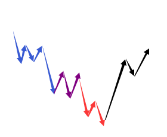
【韶山映山红】如果三买对应的那个中枢是B中枢，那么背驰段c是否包含B中枢的三卖？不包含就意味着没有背驰段，不是本级别趋势背驰。包含就意味着一个中枢可以出三卖之后再出三买。两种情况都有不完善的地方。】
【韶山映山红】如果三买对应的那个中枢是c中枢，也就是说，B中枢的离开段的背驰，进入中阴阶段之后，没有形成中阴中枢，就直接转折了，这确实是最强有力的次级别转折。那么这里说的V型反转是哪个级别的反转？是这个次级别转折？还是意味着有反趋势级别的转折？】
【韶山映山红】这里是二三买重合的第四次描述：“第二、三类买点合一”。《教你炒股票21：缠中说禅买卖点分析的完备性》“只有第二类买点与第三类买点是可能产生重合的，这种情况就是：但第一类买点出现后，一个次级别的走势凌厉地直接上破前面下跌的最后一个中枢，然后在其上产生一个次级别的回抽不触及该中枢，这时候，就会出现第二类买点与第三类买点重合的情况，也只有这种情况才会出现两者的重合。当然，在理论上没有任何必然的理由确定第二、三类买点重合后一定不会只构成一个更大级别的中枢扩张，但实际上，一旦出现这种情况，一个大级别的上涨往往就会出现。”
【韶山映山红】静姐解读这种情况是B中枢没有三卖，B中枢向下的离开段直接盘整背驰小转大，然后先出B中枢的三买。】
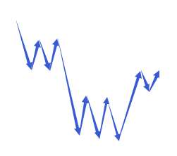
二、最弱的情况
第二类买点跌破第一类买点，也就是第二类买点比第一类买点低，这是完全可以的，【韶山映山红】早期的课程说，一买就是最低点，跌破一买之后要退出。当时以为跌破就意味着背驰判断错误，到这里才明确，完全分类本来就包括这种情况。】
这里一般都构成盘整背驰，【韶山映山红】如果二买的向下段与一买的向下段比较没有构成盘整背驰，下跌就会止不住，所以这时候一定要有盘整背驰，使走势至少回到一买点以上。二买跌破一买以后，也就在原趋势最后一个中枢的下面形成了新的中枢，使最后一个中枢扩张升级了，而且是向下的扩张升级，所以是最弱的情况，后面是顺势平台也是向下的。】
后面对应这从顺势平台到扩张平台等不同的走势，这在后面的课程里会说到。【韶山映山红】二买跌破一买后的走势，有着“从顺势平台到扩张平台等不同的走势”。这个新的走势和上一个中枢是什么关系？★以后研究。】
【韶山映山红】“顺势平台”这个名词只在16课问答中出现过：“盘整，会构成各种不同的图形，这是一种特殊的盘整图形，叫顺势平台，这是盘整里最弱的一种。由于现在没说到价值中枢的概念，所以有关趋势与盘整的最严格定义没法给出，该定义是本ID独此一家，以后会说到的。所以现在各位先用这个通用的，但不完全严格的定义来找趋势与盘整，该定义唯一不精确的地方就是这个顺势平台，把这个特例记住就可以了。”（2006-12-14 16:31）】
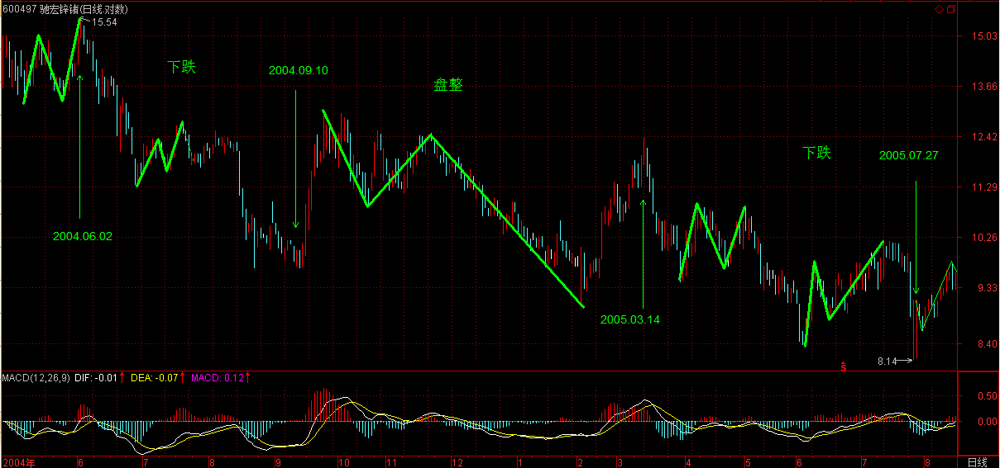
【韶山映山红】那个时候对趋势和盘整的定义还是最原始的：
上涨：最近一个高点比前一高点高，且最近一个低点比前一低点高。
下跌：最近一个高点比前一高点低，且最近一个低点比前一低点低。
盘整：最近一个高点比前一高点高，且最近一个低点比前一低点低；或者最近一个高点比前一高点低，且最近一个低点比前一低点高。
驰宏锌锗的这一段盘整的高点是前高后低，低点也是前高后低，按照当时的定义应该算是下跌了，所以缠师说，“该定义唯一不精确的地方就是这个顺势平台”。
那么，什么是顺势平台呢？这个盘整给我们描述的形状就是：低点更低了，高点却不能更高，没有形成盘整定义的喇叭口形状，而是顺着原来的趋势发生了变形。】
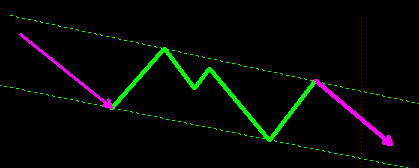
【韶山映山红】缠论没有单独讲过“扩张平台”这个词。古老的盘整概念其实就是收敛平台和扩张平台两种。】
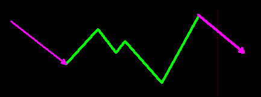
三、一般性走势
也就是前面两者之间的走势。这种情况下，第一、二、三买点，是依次向上，一个比一个高。【韶山映山红】第一种情况，二三买重合，都高于一买。第二种情况，二买低于一买，三买高于两者，如果有的话。其他情况就是第一、二、三买点依次向上，一个比一个高。】
站在原来下跌最后一个中枢的角度，第一、二、三类买点都可以看成是中枢震荡的结果，因此，在第二类与第三类之间，可能会存在着更多的中枢震荡走势，不一定如第一、二之间是紧接的。【韶山映山红】这些震荡走势为什么要看成是“原来下跌最后一个中枢”的“中枢震荡的结果”，而不是新的走势类型的新中枢的震荡？如果反弹形成线段类趋势还可以理解，可原文的实例都是形成新的走势中枢啊。★以后研究。★难道说，是因为新的走势类型的中枢还没有出现第三类买卖点，就还是中阴阶段，所以震荡也是围绕“原来下跌最后一个中枢”的？】
那第二类与第三类买点之间的震荡买点，一般就不给特别的名称了，当然，也可以看成是第二类买点，这样，并没有多大的影响。【韶山映山红】一买是背驰所以只有一个，三买也只有第一个才算，二买就可能有一串了。缠师前面课程的二买就经常不是第一个二买，所以把人绕糊涂了。】
注意，只有在这回升的中阴状态下才有第一、二类买点，【韶山映山红】回升的中阴状态还不知道是背驰转折三种情况的哪一种。】中阴状态结束后，所有的中枢震荡只存在第三类买卖点以及中枢震荡的买卖点，就不存在第一、二类买卖点了。
2、走势必完美
这问题，估计没有人能真明白，因为这里学过现代数学的人很少，所以对这样整体性的问题，估计只有糊涂的份。
所谓走势必完美，就是本ID所给出的分型、笔、线段、不同级别走势类型所对应的递归函数，能将行情的任何走势唯一地分解。【韶山映山红】所谓走势必完美，就是初始化函数和递归函数的自同构结构能将行情的任何走势唯一地分解。】缠论的初始化函数和递归函数都属于函数的递归函数。】
唯一分解定理，在现代数学理论的任何分枝中都是核心的问题。一个具备唯一分解定理的理论，都是强有力的。例如，当时在解决费马猜想时，用到分圆域的问题，但分圆域没有唯一分解定理，也就是唯一分解并不是总能成立，这样只能引进理想数，使得在理想数的角度能让唯一分解定理成立，从而展开了代数数论一个全新篇章。
本ID理论最牛的地方，就是把仿佛毫无头绪的股票走势，给出了唯一分解定理，也就是走势必完美，这等于引进理想数，使得代数数论升堂入室一样牛。【韶山映山红】缠论的“唯一分解定理”，就是“走势必完美”。】
数学不行，当然看不明白这些关节。很多人，整天纠缠在分型如何如何上，只能证明这些人根本没看懂本ID的理论。分型等于递归函数的a0，这完全可以随意设计，如何设计都不会影响到唯一分解定理的证明。
但现在这种设计，一定是所有可能设计中最好的，这使得笔出现的可能性最大并把最多的偶然因数给消除了，使得实际的操作中更容易把走势分解。【韶山映山红】A0可以有很多种，“但现在这种设计，一定是所有可能设计中最好的”。为什么要“使得笔出现的可能性最大”？“把最多的偶然因数给消除了”，换句话说，就是找不到全部消除。笔划分也属于最不坏的选择？★可以做个专题，以后研究。】
注意，很多人连分型都没完全搞明白，分型不需要任何假设，只需要符合定义就可以，是否符合，只有唯一的答案，不需要任何假设。
有了走势必完美，就可以把一切关于走势的理论包含其中，所以本ID的理论可以包含所有其他的理论并指出其不足的地方，就在于本ID的理论解决了最根本的理论问题：唯一分解。【韶山映山红】有了唯一分解，就有了完全分类。】
当然，对于这个问题，如果有好的现代数学背景，理解得更深一点。当然，如果不明白的，也无所谓，本ID已经把大的背景藏在后面，给出了浅的，谁都可以应用的操作方法，把那方法搞明白就可以。
(2014-03-10 20:14:10)
缠师在几次回复中提到关于平台的问题，如奔走型，顺势平台等。缠师回复中说以后会系统讲一下，但智者驾鹤，留下诸多遗憾。在下不才，结合自己对缠论的理解和波浪理论中一些关于对平台类型的论述，综合的论述一下。
缠师讲的平台类型其实就是波浪理论中对于平台类似的几个大类的描述，只不过有些略微的差异。
所谓的平台整理就是调整。在缠论里就对应着中枢，也就是缠师说而未说的中枢的类型。
第一种是“之”字型。
这种调整类型回调幅度往往比较深，市场弱势比较明显。
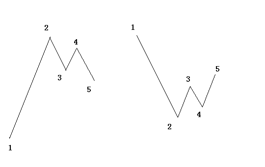
以上图中左边图为例。很显然，2>4 , 3>5
第二种，奔走平台
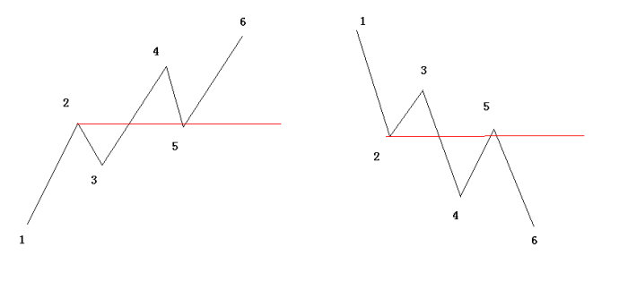
第三种，顺势平台
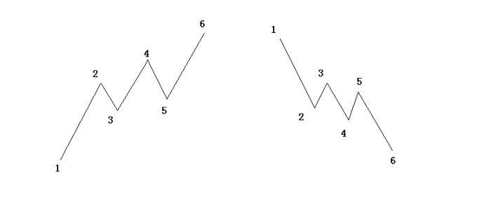
第四种，扩张平台
4>2 5<3 （一笔的破坏）
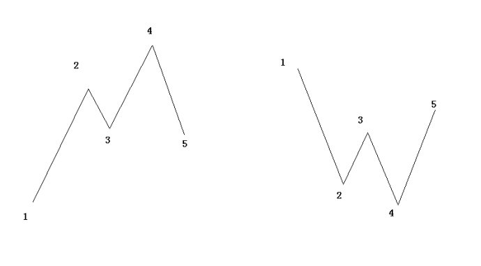
第五种，收缩平台
( 可以探讨笔的包含关系)
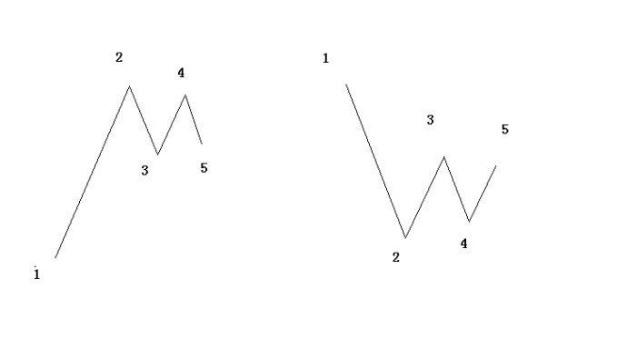
第六种，规则型
2=4 3>5
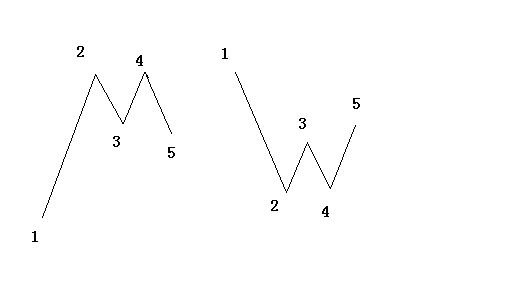
以上六种是波浪理论中对于调整形态的分类，基本上就是缠师说的那几类平台类型。
我们用缠论的视角去分析上面的六种类型，其实会发现，每一种类型都被包含在缠论当中。以上对于整条形态的整理，体现着缠师对于技术分析本质的立论，也就是技术分析的本质。分类思想的运用。
整理完平台的类型，使我又想起缠师在《G股是G点，大牛不用套》中提到的一句话，我认为是缠师对于市场对本质的一个认识，也是他写出缠论的思想之源：投资是一门艺术，而投资的艺术归根结底是资金管理的艺术，归根结底是呼吸的艺术一样。而市场的波动，归根结底是在前后两个高低点关系构成的一个完全分类中展开的，明白了这一点，市场就如同自己的掌纹一样举手可见了。
细读这句话，再看看上面几种平台类型的分类，是不是又有些感悟呢。
(2008-03-05 15:16:02)
今天平安顶风作案成功都在预料之中，【韶山映山红】中国平安宣布再融资方案获得临时股东大会高票通过。该公司拟公开增发不超过12亿股A股和412亿元分离交易可转债。】不过尚先生关于将严查巨额融资的表态，暂时抵消平安闹剧的影响。【韶山映山红】两会，证监会主席尚福林表示 创业板推出尚无具体时间表。当记者问及“股市不是提款机”言论时，尚福林表示，将会严格审查A股公司的融资方案。】由于平安方面肯定要粉饰太平，所以一定会对自己的股票进行护盘动作以争取管理层的通过，所以，平安的走势将逐步稳定甚至会对大盘短线产生支持。
技术上，一个标准的线段下跌类背驰后回到最后一个类中枢形成新的1分钟中枢，因此，该中枢的最终演化决定大盘短线走势。
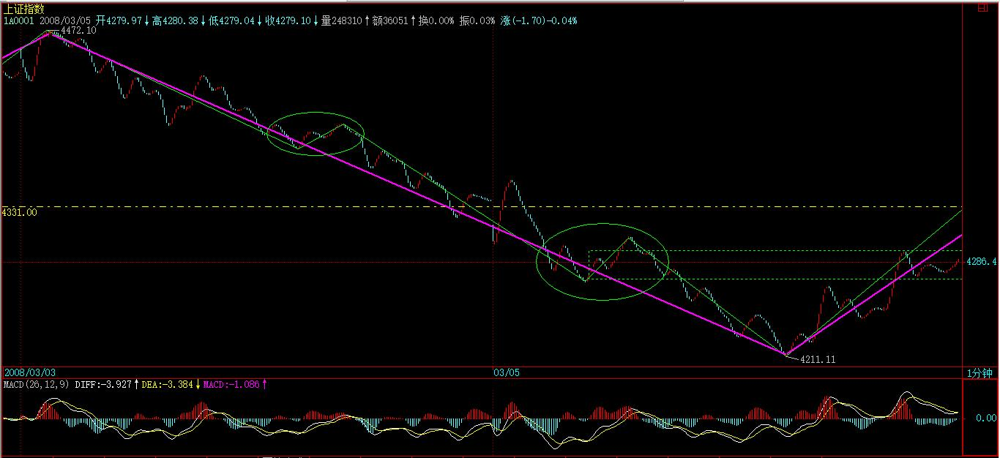
大点的角度，原来4331上下的5分钟震荡依然没有被破坏，因为第三类卖点没出现。
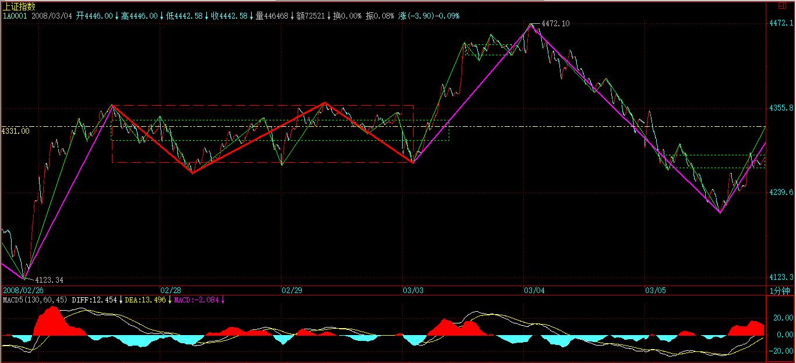
今天最重要的是，MACD的红柱子依然保持，
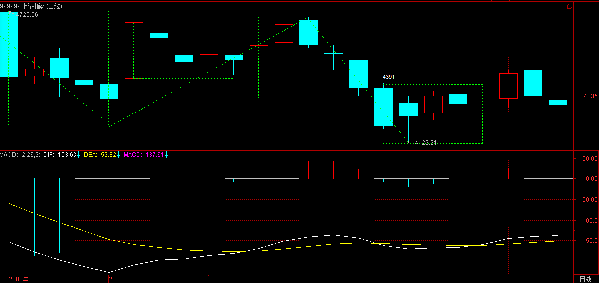
所以，只要该中枢的震荡不被破坏，大盘逐步好转的机会还是极大的，毕竟平安的事情告一段落，但是，平安顶风，会有很坏的示范效应，所以，大盘可能还要不断受到类似消息的影响，最终解决问题，还是要靠管理层切实落实他们公开场合的承诺，严查巨额融资，而且一定要相应的法规保障。
虽然大盘不断反复，但本ID一直强调的农业、创投、化工、环保新能源、消耗品等等，都一直很无耻地走出强劲行情，今天依然新高不断。连那调味品这两天都可以连续涨停，为什么？因为本ID选股讲政治。【韶山映山红】600186莲花味精，2016.01.15更名莲花健康。】
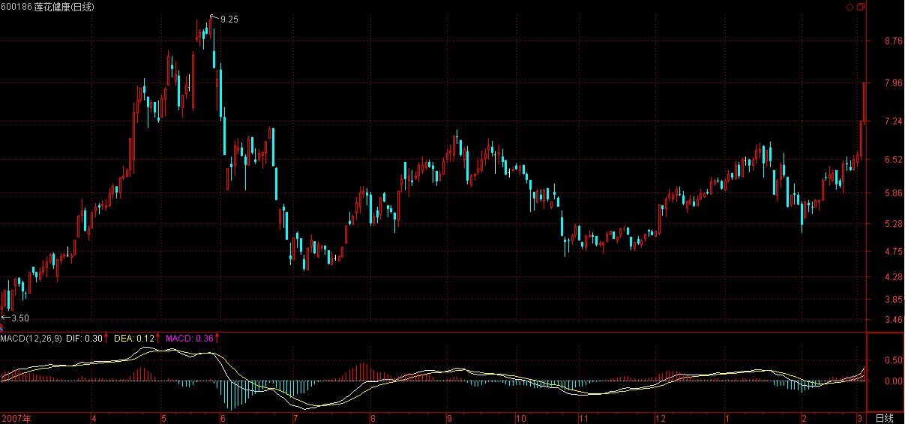
单独的个股行情，当然可以乱搞，但最终大资金，大的安排，对一个板块进行至少中线运作，如果不讲政治，那肯定有大麻烦。
你看本ID布局的那些板块，都是国家的经济发展的方向，今天的报告中，温先生都把创业板当成今天经济工作的重要任务，这是什么？这就是政治。至于农业，一年5000亿的投入，环保新能源，经济发展的最重要方向，这一切都决定了这些板块的无限生命力。
来这里时间长的都知道本ID从来不买贵股票，因为本ID当然不可能给人抬轿子。而所有的大牛股，都是从低价开始的。本ID说20以上是垃圾，并不是说20以上就没机会，但那些机会是第二、三、四中枢以后的机会，为什么在个位的时候不买？
现在，就是要介入那些新的中线未启动的股票，下一个中线大板块是什么？是医药，为什么？因为医疗改革将逐步进入启动，这是一个长期有效的题材，所以那些低价的医药股，将是极为值得关注的。
注意，一个板块的大资金布局不是一天就完成的，所以，你可以先关注，毕竟短线最有力的还是那些已经启动的板块。那么，如果要快赚钱，就要在那些已经启动的板块中找补涨的，一旦前期没怎么动的股票，有新资金介入，并且技术上要相应的买点，那当然就可以介入了。
目前，农业、创投都挖掘得差不多了，正在主升浪阶段。而化工、环保新能源等，热度还没有太猛，所以，可以寻找的好的介入机会会相应多点。这一切，关键自己要去寻找，例如本ID前几天说调味品，就两只股票，你还选择不出来，那就没什么可说的了。
至于高送配，这属于短线题材，只要行情稳定启动，肯定要表现的，只不过是除权和填权的分别而已。
今天，沙特那边有人过来谈一个项目合作的事情，没时间写帖子了，抱歉。
先下，再见。
[匿名] 不想飞
[匿名] 阿进
顶风作案预料到了。
没想到989竟然不涨啊，害我白兴奋一晚。。。
==
前几天都说了，989大势已去，你跑去掺合什么，没有大势就是多杀杀，这种活让别人去干，我都不想干呢！从那天起任何一个玩大资金的人都知道余下争扎让一些不死心的人去死。
上次我叫影子去看大盘月线参照1992年5月29后开始的调整。去看看你心中就有底的，不一定要全相似，差不多就行。
2008-3-5 15:42
[匿名] 不想飞
现在谈谈下政策方面，我先给你们打针兴奋，印花税一定会调整，大概会在股市消除一些压力时，它会出来助阵，如果前几天下调的话，那管理层就是笨蛋的，哈哈～这也可说是预测，但我敢肯定先给它作下测断。“欲知未知事，运数天可度”。
2008-3-5 16:03
[匿名] 不想飞
吃完饭一上来，就看见影子在那摇来摆去了。
2008-3-5 18:31
[匿名] 不想飞
[匿名] 影子
不过中油我不太愿意动,太慢了,028还比较活,先进了100,后补了50,成本线在16.5呢,高了点...
＝＝
580019出来刚好我大资金又找到地方玩的，今天可是吃了好多580019两年后给我儿子买尿布用的，哈哈。
2008-3-5 18:33
[匿名] 不想飞
[匿名] 新浪网友
不想飞：
帮忙看看000553好吗？这个股走势挺怪，不急不慢的，周线上已经突破，这周开始堆量了，还会有补涨行情吗？
＝＝
没什么怪，你觉得怪有可能是没达到你主观上的预期吧，我对于会不会补涨是没有主观上的判断。这样吧－－我说点破事，如果你对技术不太熟练直接看日线图，如是在日上涨过程中出现经典的小V形图形，只要V的第二个头不在创新高一般小资金都可以暂时离开下，等它调的差不多在进去做价差，一般日线上V形是十天左右，（当然还要看盘子的大小）出现这种情况价差都是非常可观的。
2008-3-5 18:49
[匿名] 不想飞
[匿名] 夜雨
[匿名] 影子 2008-03-05 18:35:57
夜雨,买张票飞过来算了,我准备约几个帅哥,也不会有我心这家伙捣乱,咱家山歌唱的多好啊:谁先爬上谁先尝.呵呵...
//
我好几年没去北京了，要把新鲜感留到开奥运会时再去。
而且我想你挺帅的，要是见了本人，失望了也不好。呵呵
缠论我也说不出个道道，象爱猫这样对理论比较精细的，倒是可以。我是感觉派，经常冲动消费，乱买乱卖啊。
＝＝
夜雨把资金分配下，留点备用资金做价差，要不然有时只有挨打的份不是好受的,完全被动就不好的。
2008-3-5 18:58
[匿名] 不想飞
[匿名] 呵呵
哈哈！！！！今天上来冒个泡！！！！600104和580016拿出来和大家分享（错了末怪）！！有大搞头！！
＝＝
比19要便宜点,我选19是有另外一个原因，那就是股指期货。
2008-3-5 19:04
[匿名] 不想飞
[匿名] 新浪网友
不想飞:
想问问你,那些去年炒的高高的股票十送十半年后,股价十几元,你觉得有无搞头?比如象601991.600881之形态的.一把股票,套老多了,解救金有限,是不是先从套最小的来解放?
＝＝
算术好像不是你这样算的吧，并不是说一定要从最小来解放什么，问题是谁比谁强。我一般不去跟风十送十之类的玩意，因为我没有第一手信息，落人之后的事我不干，看人脸色也不好玩。我一般会玩些相对我自己有把握的。
2008-3-5 19:16
[匿名] 不想飞
[匿名] 新浪网友
谢谢不想飞:
我没说清楚,我请教的是二个问题,第一种象已送过一次今年又要再送十的股票可不可短线投机一把?
第二是如果我有七个股票,且个个被套,当然套最多的没油与三九,其他少的套的不多,也二成多.又不想生生割肉,可我能用的钱现在很少了,原来就满仓,现在就是想解套一个,有何好办法
＝＝
第一答：投机最主要的是什么？即要投机当然要“机”生才有投机的价值，比如创投，国家要支持搞创投事业的，那么创投的“机”就生的。请问你的票票“机”生了吗？
第二答：办法有一个，那就提高你的水平。你也可以说第二个问题我说了不如没说，但却事实如此。
第三问：我是蛮问下，你多少资金怎么玩七个票票，我有个建议你要资金不多，那么可以尝试下玩一支票票，一般玩一个季度再换个，按均衡速度绝对要比你玩七个票票收益大。但，一般人忍受不了专一的折磨，喜欢花心，花心常常会得一身贪嗔痴疑慢病。专一一点，心如明镜，百病俱消。
2008-3-5 19:44
[匿名] 不想飞
[匿名] 新浪网友
飞哥:是不是因为今天股指期货概念的股走提比较强,所以才进5800019
＝＝
不是，我不会因为一天的冲动就先择东东的。玩它嘛，是因为对两年内的中国股市还是比较有信心的，还有一点是权证博杀比较好玩。
2008-3-5 19:49
[匿名] 不想飞
[匿名] 新浪网友
请教飞哥:十万元的资金适合做几支票啊!
＝＝
要是我五十万以下就玩一支。
2008-3-5 19:58
[匿名] 不想飞
[匿名] 珊瑚
小飞、夜雨都买了580019，自己从没买过权证，也是100股一个交易单位吗？
＝＝
不要冲动，现在它还是一张零废纸，要有心理准备哦。
2008-3-5 20:00
[匿名] 不想飞
[匿名] 新浪网友
请教飞哥:200万元的资金适合做几支票啊!
＝＝
那要看你玩盘子多大的，盘子大的上亿也只玩一支，只要不引起别人的注目就行，当力量不足抵抗时低调就是武器啦。
2008-3-5 20:05
[匿名] 不想飞
[匿名] 珊瑚 删除此人所有评论
580019的初始行权价就19.68，比现在的600028的16.20高很多，为什么要买呀....
＝＝
珊瑚啊，包工也有二包三包的，这其中打折的厉害呢？第一好处会轮到中小投资人身上嘛。
2008-3-5 20:08
[匿名] 不想飞
[匿名] 珊瑚 删除此人所有评论
真奇怪，还有呵呵的，580016，8.108很贵了，还说便宜，600104才18.15，行权价也高达27.43，不明白....
＝＝
行权比例不同啊，16是100%，18是50%也就是说18你2.6元价相当于5.2元。
2008-3-5 20:12
[匿名] 不想飞
[匿名] 呵呵
600104要是把2010年的上海的博奥会算上，你看怎么样！？？？！！！
＝＝
难道说这轮股市的上涨是因为奥动会么？奥运会结速股市也要近尾声了么？那你就大错特错的。资本市场上，经济是第一动力源。
2008-3-5 20:18
[匿名] 不想飞
[匿名] 呵呵
最少海的博奥会以前要被恶炒一把，600104至少有一个日线的中枢震荡要回到32附近！！！！！！
＝＝
单相情愿要不得，哈哈！
2008-3-5 20:26
[匿名] 不想飞
[匿名] 小宝
不想飞学长，你好！
今天这么热心的回答同学的问题，那我想问问如何判断主力出货？
就拿现在的创投来说，已经是主升浪了，你之前也提示过风险了，如何判断到顶了？谢谢！
＝＝
出货的手法有很多种，细节在这是就办法讲的，但是不管用什么样方法出货，它的痕迹始终就会出现在走势图上，这是任何一个主力都无法攻破的问题，包括缠姐在内，就算知道内在的原因也无法摆脱。
在这里说两种最常见的经典走势图。第一个小V形，一般是中短线的出货接近尾声时。想更好的认识它就打开600028图日上，10月16日到11月5日，得注意23号到11月5日那里面的K线组合，上下上的折腾，一般不离出货时的高点的均轴线，其实这些变化也不是任何一个主力有能力控制，因为他要出货，因为他要赚钱，就必然的会产这种图形上的缺陷。
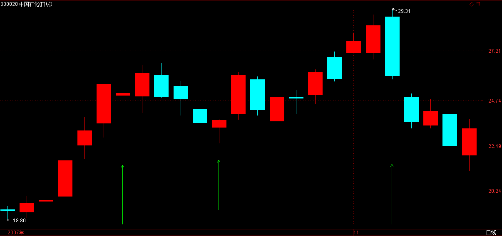
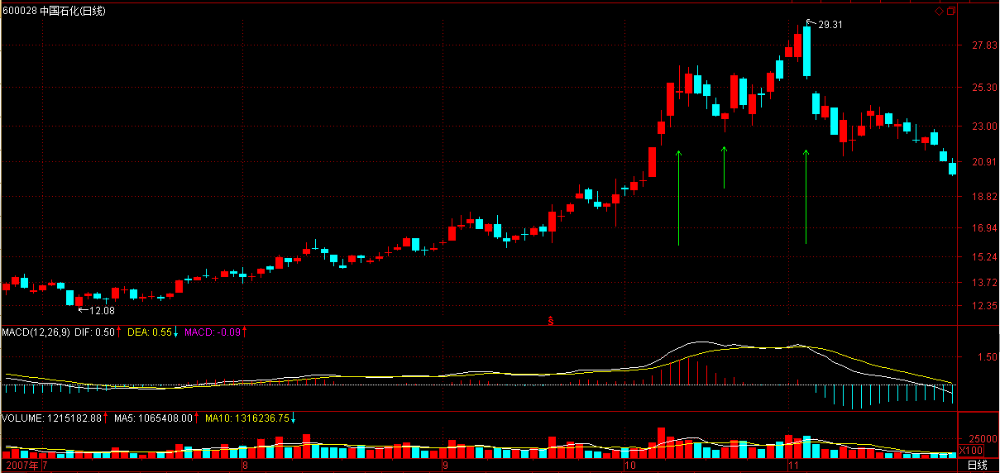
另外一种就是一分图上拉到0.975时下来低位横盘出货，这种以前常用的，但近几年正股上很少出现，一般都是小V形。不过在权证上还是用得多，这里面有时间的关系及换手率的速度等等因素。
2008-3-5 20:53
[匿名] 不想飞
当然对于大资金来说，光看图形那是为时已晚，但对于小资金来说有足够时间让你去应付的。
2008-3-5 21:02
[匿名] 不想飞
[匿名] 小宝
[匿名] 不想飞 删除此人所有评论
2008-03-05 21:02:21
当然对于大资金来说，光看图形那是为时已晚，但对于小资金来说有足够时间让你去应付的。
==========
再次感谢不想飞学长的解答！！
那我想问一下，创投大概还能炒多久，如果创业板是5月份推出的话。
＝＝
还能炒多久这个没必要去费神，只要你是低位进的就盯着它有迹像出来就闪。当然，如果你现有比较好的选择更好的计划有别的更好的切入机会，也可以选择出来，也可能短线上不如它。这里面有要考虑的平均累计数字增速的功夫，这是另外要学，比较难点，你还是把基本的学好，以后这些东东不用人教你，自然就会明白的。
2008-3-5 21:16
[匿名] 不想飞
[匿名] 小麦
小飞，你这不是很热心吗，对同学们的问题都耐心解答。怎么当面请教就推三阻四了呢？周六你为什么不能来着？
＝＝
我可不在北京，在福建。再说飞婆快生了，我怎么可能有空去呢？
2008-3-5 21:50
[匿名] 不想飞
[匿名] 新浪网友
影子不想飞:
今天平安为何会封涨停呢,
＝＝
建议你去看看鬼谷子的纵横论之类的东东,那今天平安的涨停你就会不以为然的。
2008-3-6 11:52
(2008-03-06 15:13:00)
昨天已经明确说了，平安为了得到管理层的认可，肯定要进行相应的护盘制造他们需要的气氛，今天，这护盘闹剧如期上演。【韶山映山红】中国平安盘中涨停，没封住。】
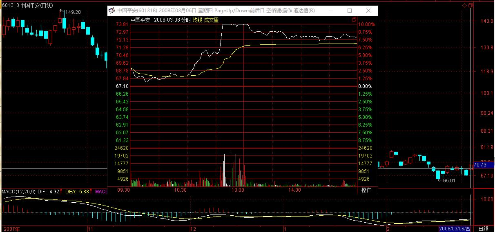
唯一的好处，昨天也说了，就是让大盘有了短线的支持，但这样的闹剧，如果最终得逞，中国资本市场的信誉将彻底破产。
技术上，原来4331点上下的5分钟中枢震荡依旧，但4391点依然不能站住，因此，这里的反复依然。【韶山映山红】5分钟中枢之后振幅加大，震荡级别降低为线段级，意味着什么？如何规避或利用？以后研究。★】
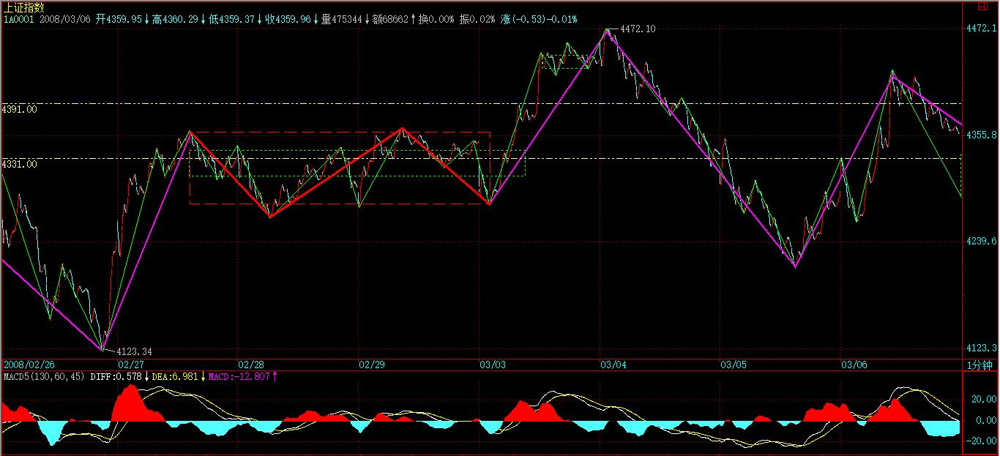
站住4391点才有攻击4695点的本钱，目前，这依然需要努力中。【韶山映山红】两次冲击未果，还显现了中枢盘整背驰之后的一卖二卖的形状，这时候真的还要保持希望吗？以后研究★】
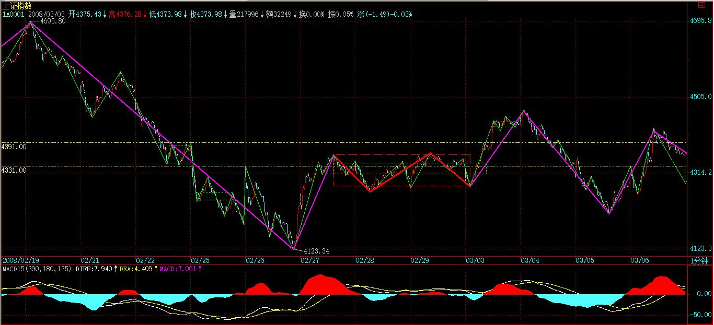
MACD的红柱子依然保持，但回拉的力度相当有限，使得夭折的风险完全不能忽略。【韶山映山红】这里的“回拉”是向上的。】
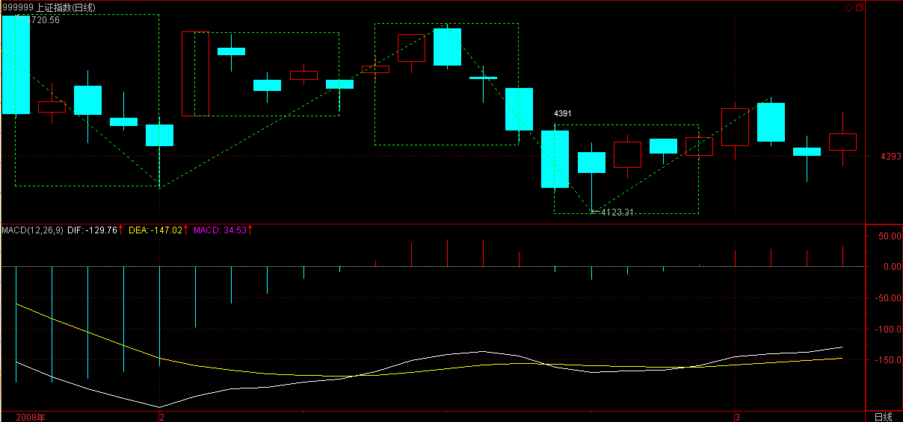
所以，短线4391点依然是最重要的位置，这位置上冲没力都必然导致强力的回拉，这点是超短线操作必须注意的。【韶山映山红】这里的“回拉”是向下的。压力位“上冲没力”“都必然导致强力的回拉”，强力的回拉也经常是二卖后的局面。】
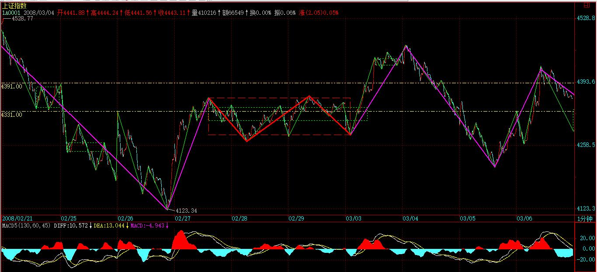
个股方面，虽然在平安带动下，指标股有所表现，但都力度有限，而且追高动力没有，暂时很难有持续性走势。
从政府工作报告中，很明显地，指数期货并不是今年的工作重点，至于证监会的一相情愿，这在去年底他们企图抢闸推出时本ID已经给予痛斥。指数期货这种事情，哪里是一个小小的部级单位可以决定的？所以应该摆正自己的位置，别给市场制造错觉。
本ID的观点一直明确，今年希望见到三件事：
一、创业板推出；【韶山映山红】2009年10月30日创业板正式上市。】
二、印花税降低；【韶山映山红】查股票交易印花税历史，2005年1月24日下调为1‰。2007年5月30日上调为3‰。2008年4月24日下调为1‰。2008年9月19日起，由双边征收改为单边征收，税率保持1‰，至今。】
【韶山映山红】印花税历史调整情况：
1990年6月28日，深市对卖方开征6‰印花税；
1990年11月23日，深市对买方开征6‰印花税；
1991年10月1日，深圳市将印花税率调整到3‰，上海也开始对股票买卖实行双向征收，税率为3‰；
1992年6月12日，股票交易双方按3‰缴纳印花税；
1997年5月12日，印花税率从3‰提高到5‰；
1998年6月12日，印花税率从5‰下调至4‰；
1999年6月1日，B股交易印花税降低为3‰；
2001年11月16日， A、B股交易印花税率统一降至2‰；
2005年1月23日，印花税税率下调为1‰；
2007年5月30日，印花税税率上调为3‰；
2008年4月23日，印花税下调为1‰；
2008年9月19日，印花税改为单边征收，税率1‰。】
三、指数期货难产。【韶山映山红】沪深300股指期货合约2010年4月16日上市交易。】
目前的形势看，完全实现的可能性依然极大。
今天涨幅上，依然是中低价股的天下，只是板块出现轮动，农业、创投等休息，奥运、消耗品中的造纸启动，这都是很正常的板块轮动。总之，还是要跟踪有潜力的板块，如果技术过关，可以参与其中的轮动；如果不行就算了。
注意，轮动操作一定是把热的冲高时抛，然后吸纳有启动迹象的潜力板块，而不是去追高，如果这节奏把握不好，还是别操作算了。
中线上，如果这次红柱子放大后不能有效站到4695点上，甚至连4391点都站不住，那么，大盘再次破位并不是什么天方夜谈。再次提醒，今年的操作，一定是折腾式的，不要想着单边不回头的操作。
先下，再见。
本课目录
教你炒股票101：答疑1【网文】关于缠师提到的调整平台类型的整理和补充选股首先要讲政治平安粉饰性护盘闹剧如期上演